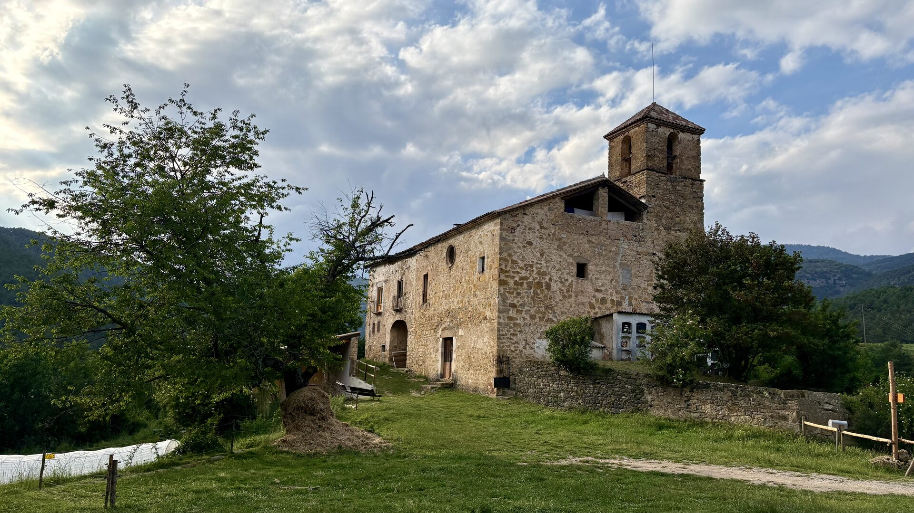
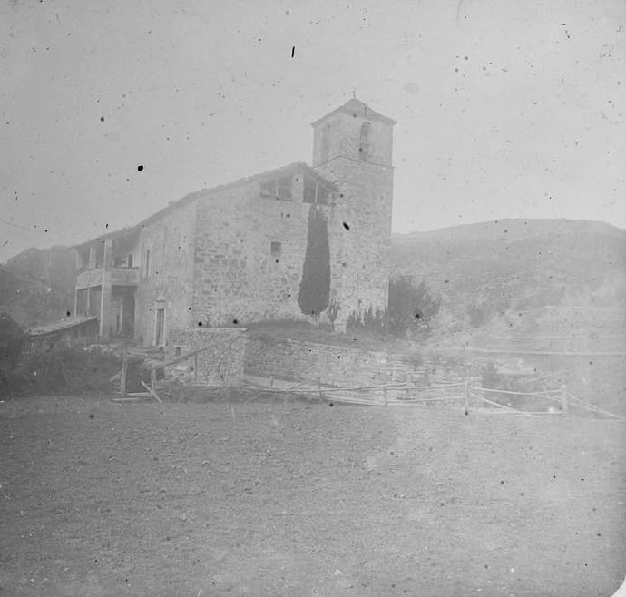
1919 AvuiEl lloc · arrossega per comparar
Hi ha llocs que guarden mil anys de vida entre les seves pedres. Aquest n'és un.
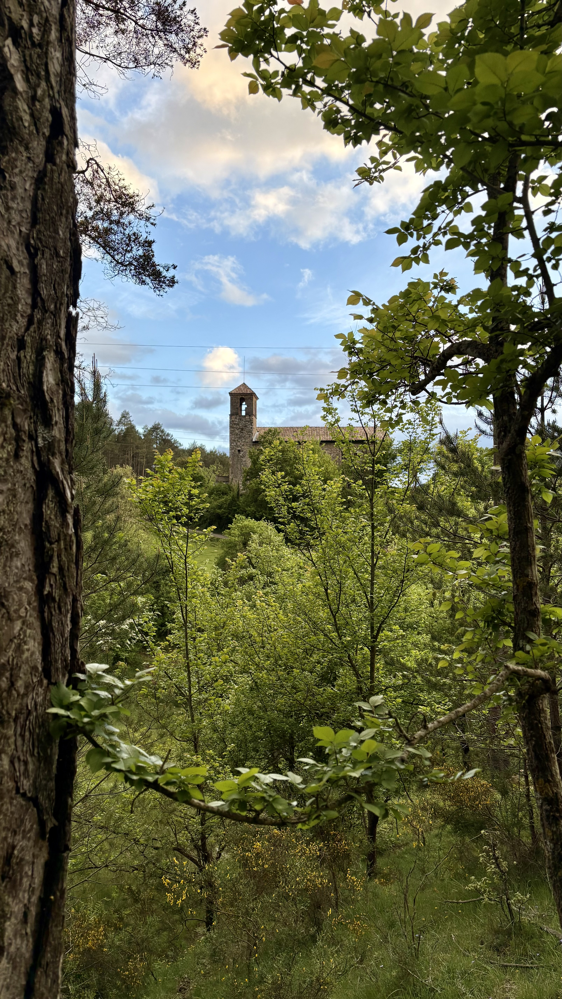
El territori
La masia que avui acull Cal Niu és l'antiga rectoria de Sant Iscle i Santa Victòria, adossada a l'església i amb una gran portalada d'arc de mig punt.
Un lloc documentat des del segle IX, al mig d'un paisatge de prats, boscos i muntanya, dins l'antic terme de Llinars de l'Aiguadora, avui a Castellar del Riu (Berguedà).
Línia de temps
El comte Guifré el Pelós impulsa la repoblació de la vall de Lord; Llinars de l'Aiguadora n'és un punt clau.
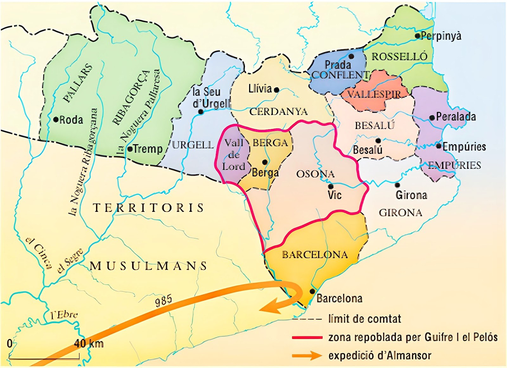
Sota el bisbat de la Seu d'Urgell s'hi organitza la primera vida parroquial i el nucli es consolida.
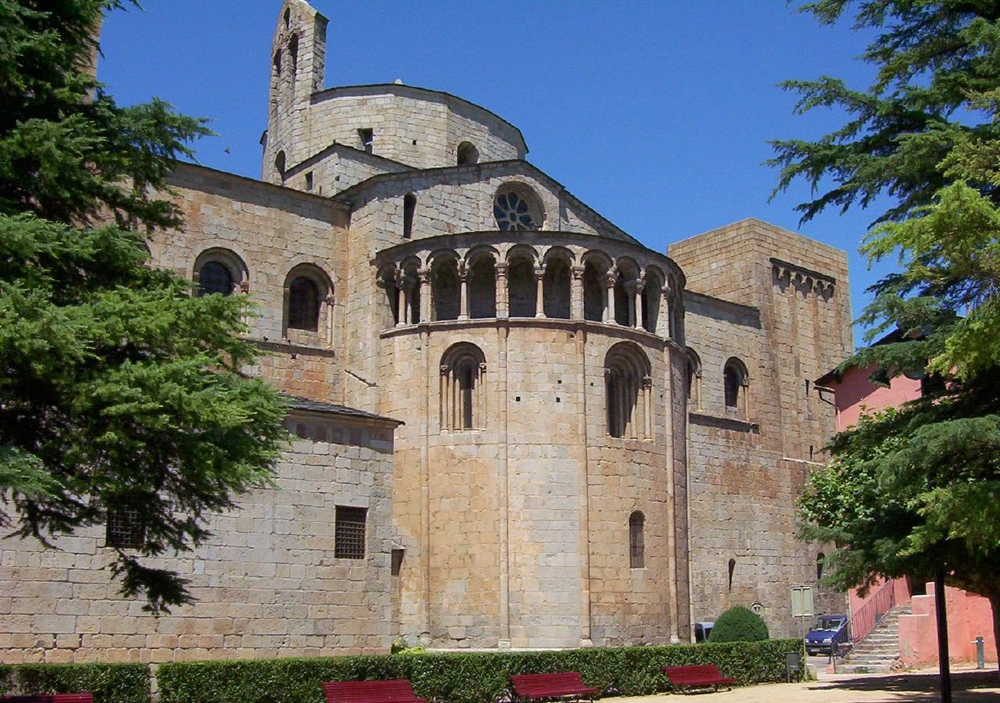
L'església de Llinars té drets sobre una desena d'esglésies veïnes —Sisquer, Castelltort, la Selva, Tentellatge, la Valldora, el Cint, la Mora, Travil, Terrers i la Pedra—. El comte Sunifred II n'usurpa alguns i el bisbe Guisad II en reclama la restitució.
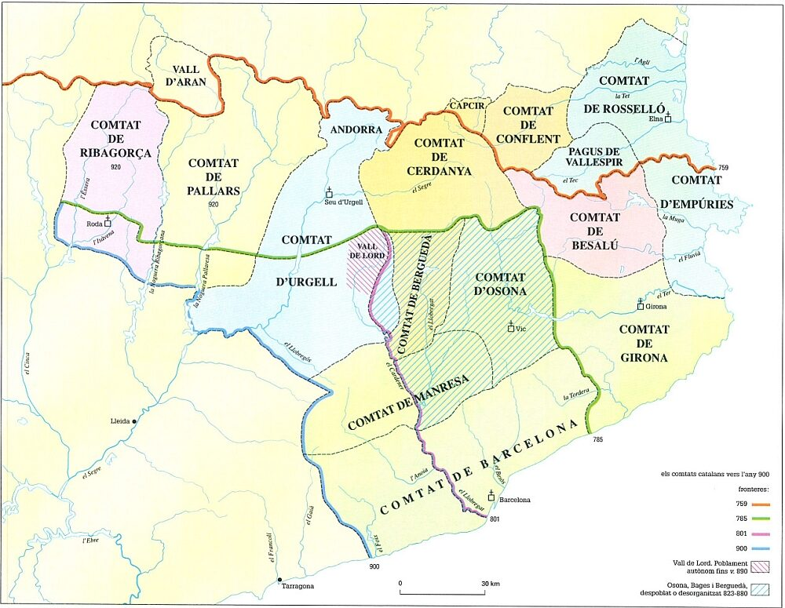
Durant segles el lloc resta vinculat al Solsonès i a l'òrbita del vescomtat de Cardona.
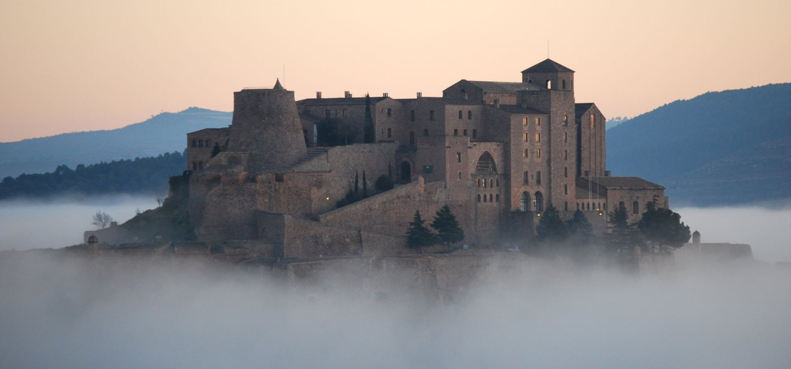
Es basteix l'actual temple barroc sobre l'antic edifici romànic, amb laudes sepulcrals d'època romànica encastades a la façana.
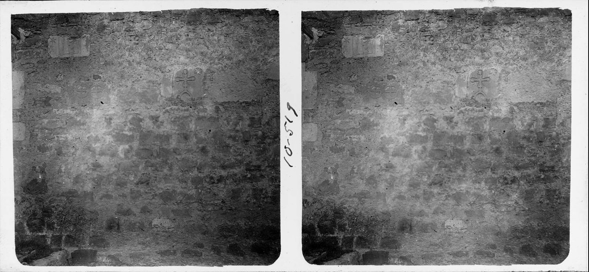
Llinars deixa de ser municipi independent i el seu terme acaba integrant-se a Castellar del Riu.
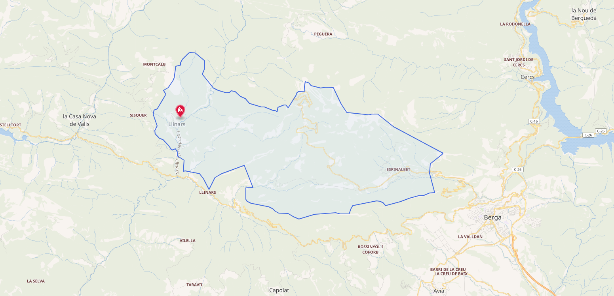
Les fotografies de Josep Salvany documenten una comunitat rural viva al voltant de l'església i la rectoria.
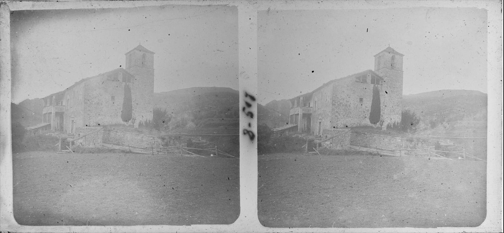
Com a bona part del món rural pirinenc, la població marxa cap a les ciutats. L'església i la rectoria es van quedant buides i en silenci.
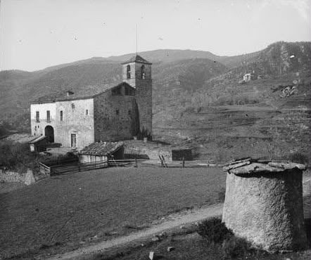
La casa torna a omplir-se de vida com a espai d'aprenentatge, bioconstrucció i comunitat: Cal Niu.
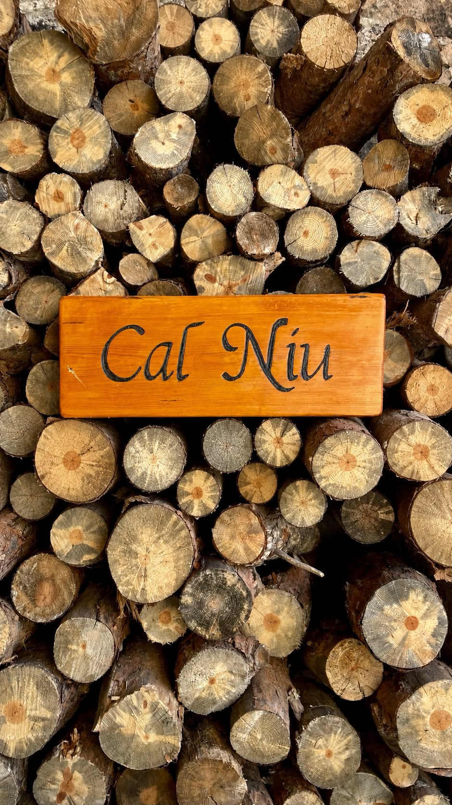
El següent capítol
La història d'aquesta casa encara s'està fent. Vine a posar-hi la teva pàgina.
Vull venir